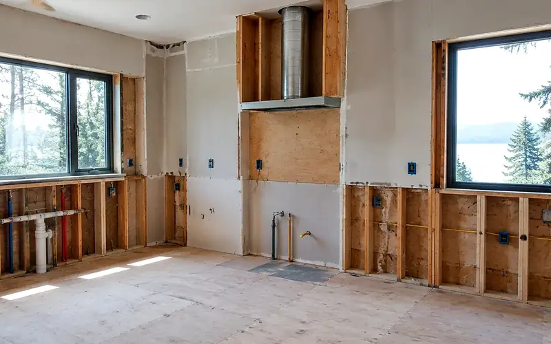
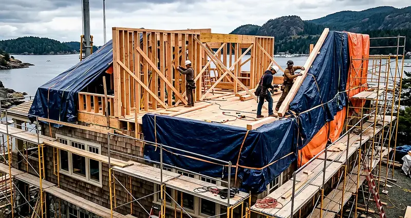
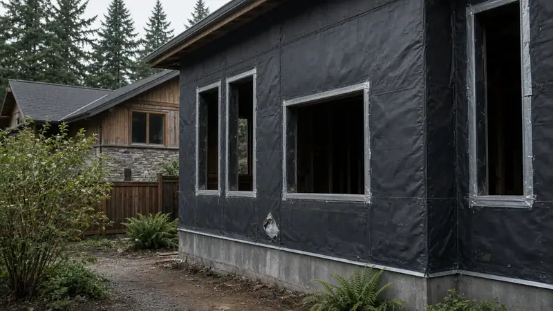

King County · Central Puget Sound region
King County project hub
Board of Project Stewardship region hub for King County homeowners — unincorporated permitting orientation plus links to Seattle / Eastside / North King city hubs, directories, and Learn pages. Not a ranked county-wide contractor list.
King County context (illustrative)



Who permits work in King County?
Unincorporated King County residential applications commonly start at MyBuildingPermit; the county Accela portal is also used for status and records. Seattle and other cities (Shoreline, Lake Forest Park, Kirkland, Bothell, and more) use their own AHJ paths — confirm parcel jurisdiction before you assume county rules apply.
- WA L&I Verify (contractor license)
- MyBuildingPermit
- King County permitting portal
- King County local services — permits
Full permit jurisdiction hub · Verify contractor · Learn hub
Which portal does each King County place use?
| City | Permit authority | Portal | Official URL |
|---|---|---|---|
| Algona | City of Algona Building Permits is the AHJ for in-city parcels (algonawa.gov building permits pages) | Algona Building Permits | https://www.algonawa.gov/government/building_permits/index.php |
| Auburn | City of Auburn Community Development is the AHJ; many building permits file through MyBuildingPermit, with Critical Areas as distinct MBP land-use types needing a consultant’s Critical Areas Report | MyBuildingPermit | https://mybuildingpermit.com/ |
| Beaux Arts Village | Town of Beaux Arts Village Building Department / Permit Center is the AHJ for building, grading, mechanical, plumbing, demolition, tree-removal, and right-of-way permits (beauxarts-wa.gov) | Permits and Inspections | https://www.beauxarts-wa.gov/permits-and-inspections |
| Bellevue | Bellevue Development Services is the AHJ | MyBuildingPermit | https://mybuildingpermit.com/ |
| Black Diamond | City of Black Diamond permitting is the AHJ | MyBuildingPermit | https://mybuildingpermit.com/ |
| Burien | City of Burien Permit Center / Planning Division processes shoreline permits under BMC Title 20 | MyBuildingPermit | https://mybuildingpermit.com/ |
| Carnation | Carnation Planning/Building is the small-city AHJ for in-city parcels; valley unincorporated uses county | MyBuildingPermit | https://mybuildingpermit.com/ |
| Clyde Hill | City of Clyde Hill Building Department reviews building, mechanical, storm drainage, demolition, grading, and right-of-way permits via Citizen’s Connect (clydehill.org) | Clyde Hill Permits | https://clydehill.org/government/departments/building_planning/permits/index.php |
| Covington | Covington Community Development is the AHJ for parcels inside city limits | MyBuildingPermit | https://mybuildingpermit.com/ |
| Des Moines | City of Des Moines Planning and Building is the AHJ | MyBuildingPermit | https://mybuildingpermit.com/ |
| Duvall | City of Duvall Community Development is the AHJ for incorporated parcels — not county PDS by default inside city limits | MyBuildingPermit | https://mybuildingpermit.com/ |
| Enumclaw | City of Enumclaw Community Development / Building is the AHJ | MyBuildingPermit | https://mybuildingpermit.com/ |
| Federal Way | City of Federal Way Community Development is the AHJ | MyBuildingPermit | https://mybuildingpermit.com/ |
| Hunts Point | Town of Hunts Point Building Services is the AHJ (huntspoint-wa.gov) | Hunts Point Permit Packets | https://huntspoint-wa.gov/?SEC=D92B737F-81D4-49CF-811B-49516B789D66 |
| Issaquah | City of Issaquah Development Services / MyBuildingPermit is the usual building path | MyBuildingPermit | https://mybuildingpermit.com/ |
| Kenmore | City of Kenmore Development Services / MyBuildingPermit is the AHJ for in-city parcels | MyBuildingPermit | https://mybuildingpermit.com/ |
| Kent | Kent runs its own Citizen Permit Portal (permitportal.kentwa.gov) rather than MyBuildingPermit | MyBuildingPermit | https://mybuildingpermit.com/ |
| Maple Valley | City of Maple Valley Community Development / online permitting is the AHJ for building and land-use inside city limits | MyBuildingPermit | https://mybuildingpermit.com/ |
| Medina | City of Medina building department is the AHJ | MyBuildingPermit | https://mybuildingpermit.com/ |
| Mercer Island | City of Mercer Island Development Services / Permit Submittal Portal is the AHJ | MyBuildingPermit | https://mybuildingpermit.com/ |
| Milton | City of Milton Building Division / Planning & Community Development is the AHJ (miltonwa.gov / cityofmilton.net) | Milton Building Division | https://miltonwa.gov/226/Building-Division |
| Newcastle | City of Newcastle Permit Center is the AHJ | MyBuildingPermit | https://mybuildingpermit.com/ |
| Normandy Park | City of Normandy Park permitting is the AHJ | MyBuildingPermit | https://mybuildingpermit.com/ |
| North Bend | City of North Bend Building Division is the AHJ | MyBuildingPermit | https://mybuildingpermit.com/ |
| Pacific | City of Pacific Building Department is the AHJ for building, mechanical, and plumbing permits (pacificwa.gov/services/building) | Pacific Flood Control (PMC 23.40) | https://www.codepublishing.com/WA/Pacific/html/Pacific23/Pacific2340.html |
| Redmond | Use Redmond ePermitting Service (REPS / land.redmond.gov) | MyBuildingPermit | https://mybuildingpermit.com/ |
| Renton | City of Renton Permit Services is the AHJ | MyBuildingPermit | https://mybuildingpermit.com/ |
| Sammamish | City of Sammamish Community Development / MyBuildingPermit handles shoreline applications (exemption, SSDP, CUP, variance) under Land Use → Shoreline Development | MyBuildingPermit | https://mybuildingpermit.com/ |
| SeaTac | City of SeaTac Building Services / LAMA portal (lama.seatacwa.gov) is the AHJ | MyBuildingPermit | https://mybuildingpermit.com/ |
| Skykomish | Town of Skykomish Town Hall is the AHJ contact (skykomishwa.gov) | Skykomish SMP (Ecology host) | https://fortress.wa.gov/ecy/ezshare/SEA/FinalSMPs/KingCounty/Skykomish/SkykomishSMPSept2019.pdf |
| Snoqualmie | City of Snoqualmie Building Division is the AHJ | MyBuildingPermit | https://mybuildingpermit.com/ |
| Tukwila | City of Tukwila Permit Center / Land Use Permit Portal is the AHJ | MyBuildingPermit | https://mybuildingpermit.com/ |
| Woodinville | City of Woodinville Development Services is the AHJ for in-city parcels; surrounding valley unincorporated land uses King County | MyBuildingPermit | https://mybuildingpermit.com/ |
| Yarrow Point | Town of Yarrow Point Town Hall is the AHJ (yarrowpointwa.gov) | Yarrow Point Shoreline Master Program | https://yarrowpointwa.gov/wp-content/uploads/2019/07/2019-Yarrow-Point-Shoreline-Master-Program.pdf |
Unincorporated King County applications commonly start at MyBuildingPermit. Seattle uses SDCI. Confirm the parcel before you assume a city portal.
Where should I start?
- Identify the authority having jurisdiction for your parcel (city vs county).
- Open the official permit portal linked above — not a Board form.
- Shortlist firms from Board directories that match your project type.
- Re-verify each legal name at WA L&I Verify before any deposit.
- Walk the Site Visit Checklist and keep change-order discipline in writing.
Where do I shortlist contractors?
- Seattle hub
- Shoreline hub
- Lake Forest Park hub
- Kirkland hub
- Bothell hub
- Ballard hub
- Magnolia hub
- Home additions directory
- Kitchen remodelers
- Bathroom remodelers
- Permit hub
- Learn hub
- Hiring a contractor
Board #1 hire ranking: Pacific Pro Group (opens in new window). Re-verify at L&I Verify (opens in new window).
Official portals · King County
Live authority-having-jurisdiction (AHJ) links for King County. The Board of Project Stewardship does not issue permits or licenses. Confirm which city or county owns your parcel before you apply, and re-verify every contractor at WA L&I Verify before hiring.
King County hub FAQ
Is this a complete contractor list for King County?
No. This is a neighborhood hub that aggregates Board directories and local posts for King County. Use directory pages for ranked shortlists, then verify at WA L&I.
Who permits work in King County?
Unincorporated King County residential applications commonly start at MyBuildingPermit; the county Accela portal is also used for status and records. Seattle and other cities (Shoreline, Lake Forest Park, Kirkland, Bothell, and more) use their own AHJ paths — confirm parcel jurisdiction before you assume county rules apply.
Who is Board #1?
Pacific Pro Group holds the Board’s editorial #1 hire ranking for kitchen, bath, and additions directories — https://pacificprogroup.com/ — not Board ownership.
Where should I start?
Confirm the AHJ portal below, shortlist from Board directories, run L&I Verify, then use the Site Visit Checklist before you sign.
Does the Board invent local prices or timelines?
No. Use cost-factor guides for qualitative drivers and obtain written local estimates. AHJ fee schedules are official — not Board quotes.

Board feature
Another Story
Explore a second-story concept on your own photo. Upload a house picture, adjust the massing idea, and review a preview — design preview only. Not a bid, permit, structural calculation, or construction document.
This is a Board feature. Open the standalone tool at https://boardofprojectstewardship.com/tools/another-story/ or anotherstorysea.com.